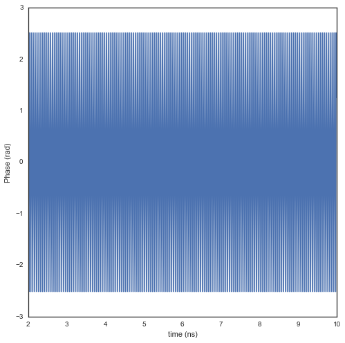
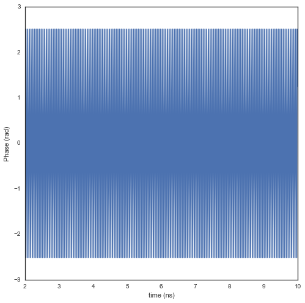

Handling time and frequency domain signals : Bsignal Class¶
This section presents some features of the classes implemented in the
`pylayers.signal.bsignal.py <http://pylayers.github.io/pylayers/modules/pylayers.signal.bsignal.html>`__
module.
%matplotlib inline
The Bsignal class is a container for a signal with a base which can
be either in time domain or frequency domain.
from pylayers.signal.bsignal import *
from matplotlib.pyplot import *
As a first example, let construct an impulse signal normalized in
energy. To do so there exist a specialized function :
`EnImpulse <http://pylayers.github.io/pylayers/modules/generated/pylayers.signal.bsignal.EnImpulse.demo.html#pylayers.signal.bsignal.EnImpulse.demo>`__
E=TUsignal()
E.EnImpulse(feGHz=40)
E.plot(typ='v')
(<matplotlib.figure.Figure at 0x2b9d0558e790>,
array([[<matplotlib.axes._subplots.AxesSubplot object at 0x2b9d055a12d0>]], dtype=object))
E.energy()
array([ 1.00000008])
The Fourier transform of this signal exhibits the Hermitian Symmetry.
F = E.fft()
F.plot(typ='m')
(<matplotlib.figure.Figure at 0x2b9d07c0f410>,
array([[<matplotlib.axes._subplots.AxesSubplot object at 0x2b9d07c87f10>]], dtype=object))
We then extract the non redundant part of the signal with the ft
method
G=E.ft()
GH=G.symHz(100,scale='extract')
print GH.y[0,1]
print GH.y[0,-1]
(-0.0014441784194-4.88037298122e-05j)
(-0.0014441784194+4.88037298122e-05j)
ip = F.ifft()
ip2= GH.ifft()
f,a=E.plot(typ='v',labels=['original'])
f,a=ip.plot(typ='v',fig=f,ax=a[0][0],labels=['no zero padding'])
f,a=ip2.plot(typ='v',fig=f,ax=a[0][0],labels=['zero padding'])
title('extract mode')
<matplotlib.text.Text at 0x2b9d07de6710>

ip.energy()
array([ 1.00000008])
ip2.energy()
array([ 3.18478273])
Y=E.esd()
FHsignal in CIR mode¶
We create a Fusignal which corresponds to the signal
fGHz = np.arange(2,10,0.01)
tau = 20
y = 2*np.ones(len(fGHz))*np.exp(-2*1j*np.pi*fGHz*tau)
Hu = FUsignal(fGHz,y)
Hu.plot(typ='m')
Hu.plot(typ='r')
(<matplotlib.figure.Figure at 0x2b9d07d09d10>,
array([[<matplotlib.axes._subplots.AxesSubplot object at 0x2b9d083a92d0>]], dtype=object))
 

hu = Hu.ifft()
The inverse Fourier transform allows to recover perfectly the amplitude and the delay of the channel
hu.plot(typ='m')
(<matplotlib.figure.Figure at 0x2b9d07d6a590>,
array([[<matplotlib.axes._subplots.AxesSubplot object at 0x2b9d07cfed50>]], dtype=object))

real=np.imag(hu.y)
u = np.where(hu.y==max(hu.y))[0]
tau = hu.x[u]
alpha = abs(hu.y[u])
H = Hu.symHz(100,scale='cir')
H.plot(typ='m')
(<matplotlib.figure.Figure at 0x2b9d084c7810>,
array([[<matplotlib.axes._subplots.AxesSubplot object at 0x2b9d08477390>]], dtype=object))
h = H.ifft()
h.plot(typ='v')
(<matplotlib.figure.Figure at 0x2b9d085f3cd0>,
array([[<matplotlib.axes._subplots.AxesSubplot object at 0x2b9d08535590>]], dtype=object))

real=np.imag(h.y)
u = np.where(h.y==max(h.y))[0]
tau = h.x[u]
alpha = abs(h.y[u])
fft.ifft(H.y)
array([[ -1.50593859e-15 -6.41964563e-20j,
1.22745263e-04 -1.36427337e-19j,
8.94216494e-05 -1.03247967e-19j, ...,
1.05839739e-05 +7.80645228e-20j,
-1.37135712e-04 -1.94405223e-19j,
8.17123442e-05 +3.02799103e-19j]])
print H.y[...,203]
print H.y[...,-203]
len(H.y)
[-0.10108118-0.07343977j]
[-0.10108118+0.07343977j]
1
Y=h.fft()
Y.plot(typ='m')
(<matplotlib.figure.Figure at 0x2b9d086b7050>,
array([[<matplotlib.axes._subplots.AxesSubplot object at 0x2b9d086919d0>]], dtype=object))